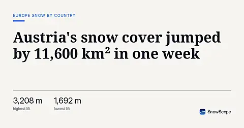
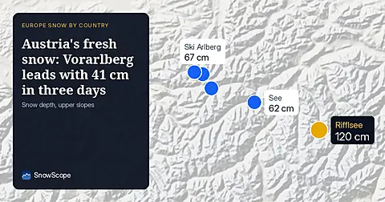

Austria snow report: snow depth, new snow and the week ahead
In Austria about 51,970 km² of high ground is white today, 100 % of the country's mapped mountains and hills. That is 21,640 km² more than yesterday. The deepest resort is Stubaier Gletscher with 75 cm on its upper slopes. Little or no new snow is expected in the week ahead.
See the live snow forecast for Stubaier Gletscher in the SnowScope appSnow depth, powder alerts and the 3D map, free.Today at a glance
| White area | 51,970 km² |
|---|---|
| Share of the high ground | 100 % |
| Most new snow in 24 h | 26 cm |
| Most new snow in 3 days | 30 cm |
| Next 3 days (snowiest slopes) | 2 cm |
| Next 7 days | 2 cm |
| Mostly white from | 500 m |
| Resorts with snow on top | 273 of 277 |
The last seven days
On 20 November about 22,850 km² was white; today it is 51,970 km².
The snow cover grew by 29,120 km² over these days.
The biggest three-day snowfall of the period reached 38 cm (to 22 November).
This season against a normal year
3 of the 5 deepest resorts are above their usual snow depth for 26 November.
Stubaier Gletscher: 48 cm at about 2,450 m, a normal year has 56 cm; Rifflsee: 42 cm at about 2,239 m, a normal year has 34 cm; Großglockner Heiligenblut: 21 cm at about 2,070 m, a normal year has 41 cm; Pitztaler Gletscher: 61 cm at about 2,576 m, a normal year has 52 cm; Kaprun: 30 cm at about 1,894 m, a normal year has 28 cm.
These depths are for one height on each mountain, below the top.
In past winters the best snow at Stubaier Gletscher usually came early March / late March.
Snowiest resorts today
Stubaier Gletscher leads with 75 cm on its upper slopes.
Then come Rifflsee (72 cm), Großglockner Heiligenblut (67 cm), Pitztaler Gletscher (66 cm) and Kaprun (61 cm).
| Resort | Upper slopes | New, 3 days | Next 3 days | Top |
|---|---|---|---|---|
| Stubaier Gletscher | 75 cm | 29 cm | 0 cm | 3,208 m |
| Rifflsee | 72 cm | 26 cm | 0 cm | 2,804 m |
| Großglockner Heiligenblut | 67 cm | 27 cm | 1 cm | 2,905 m |
| Pitztaler Gletscher | 66 cm | 32 cm | 0 cm | 3,424 m |
| Kaprun | 61 cm | 22 cm | 1 cm | 3,024 m |
Where the snow is coming next
The first flakes are expected around Friday 27 November.
The last three days brought the most fresh snow to Carinthia, the Ötztal Alps and the Salzburg Alps.
The second week could add up to 30 cm where it snows most.
Snow by height
Height by height: 500-1,000 m: 9 cm on average, 99 % white; 1,000-1,500 m: 12 cm on average, 100 % white; 1,500-2,000 m: 17 cm on average, 100 % white; 2,000-2,500 m: 27 cm on average, 100 % white; above 2,500 m: 38 cm on average, 100 % white.
Most of the ground is white from about 500 m up.
Planning a trip
Above 500 m the ground is almost fully white (99 % covered), so runs up there have a continuous base.
The resorts with the highest lifts are the safest bet: Pitztaler Gletscher (3,424 m), Stubaier Gletscher (3,208 m) and Kaprun (3,024 m).
Little new snow is expected in the next three days, so today's picture should hold for a weekend trip.
Day by day
- Thursday 26 November · 51,970 km² white, up to 30 cm of new snow in three days, deepest Stubaier Gletscher (75 cm)
- Wednesday 25 November · 27,250 km² white, up to 8 cm of new snow in three days, deepest Kaprun (67 cm)
- Tuesday 24 November · 28,170 km² white, up to 25 cm of new snow in three days, deepest Stubaier Gletscher (65 cm)
- Monday 23 November · 31,690 km² white, up to 32 cm of new snow in three days, deepest Stubaier Gletscher (67 cm)
- Sunday 22 November · 31,340 km² white, up to 38 cm of new snow in three days, deepest Stubaier Gletscher (67 cm) · Austria's snow cover jumped by 11,600 km² in one week
- Saturday 21 November · 29,110 km² white, up to 30 cm of new snow in three days, deepest Stubaier Gletscher (63 cm) · Austria leads the Alps: 56 percent snow cover versus Germany's 7 percent
- Friday 20 November · 22,850 km² white, up to 26 cm of new snow in three days, deepest Rifflsee (120 cm) · Austria's fresh snow: Vorarlberg leads with 41 cm in three days
Questions and answers
Is there snow in Austria right now?
Yes. About 51,970 km² of high ground is white, 100 % of the mapped mountains. The deepest resort is Stubaier Gletscher with 75 cm on its upper slopes.
Where is the most snow in Austria today?
Stubaier Gletscher leads with 75 cm on its upper slopes. Then come Rifflsee (72 cm), Großglockner Heiligenblut (67 cm) and Pitztaler Gletscher (66 cm).
Will it snow in Austria this week?
The first flakes are expected around Friday 27 November. The last three days brought the most fresh snow to Carinthia, the Ötztal Alps and the Salzburg Alps.
From what height is there snow in Austria?
Most of the ground is white from about 500 m up.
How much new snow fell in Austria in the last three days?
Up to 30 cm on the snowiest slopes, 26 cm of it in the last 24 hours. At least 5 cm fell over some 51,390 km². The last three days brought the most fresh snow to Carinthia, the Ötztal Alps and the Salzburg Alps.
How many ski resorts in Austria have snow?
273 of the 277 resorts we follow have snow on their upper slopes today. Snow on top does not mean the lifts are open: check the resort before you go.
When is the best time to ski in Austria?
In past winters the best snow at Stubaier Gletscher usually came early March / late March.
Is the season off to a good start in Austria?
3 of the 5 deepest resorts are above their usual snow depth for 26 November.
Stories about Austria

Austria gained 11,600 km² of snow in seven days. Stubaier Gletscher leads with 67 cm. Data from 22 November 2026.

Austria has snow across 56 percent of measured terrain on 21 November, far ahead of Germany at 7 percent. Vorarlberg received 47 cm in three days.

Vorarlberg received the most new snow in Austria over three days to 20 November. Up to 26 cm fell across large areas as a storm moved through the Alps.